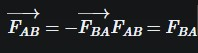

Isaac Newton definió las tres leyes de la dinámica, las cuales se
conocen como leyes de Newton; fue el primero en demostrar que las
leyes que regían los movimientos de los cuerpos en la tierra son
las mismas que gobiernan los cuerpos celestes.
La Tercera Ley de Newton o Principio de acción-reacción establece
que cuando dos partículas interactúan, la fuerza sobre una partícula
es igual y opuesta a la fuerza que interactúa sobre la otra partícula.
Es decir, si existe una fuerza externa, tal fuerza será contrarrestada
por otra igual, pero en la dirección opuesta.
También puedes consultar este video,
el cual da una explicación de la
tercera ley de Newton.
Ahora profundicemos el tema tocando los siguientes puntos:
En el gif se puede ver como una persona golpea un saco de box. Dicho saco se mueve a la derecha por la fuerza que se le aplico, después, el saco de box regresa al lado contrario (izquierda) con la misma fuerza del golpe que le dio la persona.
Cuando un cuerpo A ejerce una fuerza sobre otro cuerpo B, B reaccionará ejerciendo otra fuerza sobre A de igual módulo y dirección aunque de sentido contrario. La primera de las fuerzas recibe el nombre de fuerza de acción y la segunda fuerza de reacción. 
Donde:
:Es la fuerza de acción de A sobre B y su unidad de medida en el Sistema Internacional (S.I.) es el newton (N)
:Es la fuerza de reacción de B sobre A y su unidad de medida en el S.I. también es el newton (N)
En nuestro día a día podemos ver y vivir ejemplos en los que usa el principio de acción y reacción. A continuación te mostraremos un ejemplo:
NADAR
De igual manera, cuando nadas impulsas el agua hacia atrás, gracias a lo cual el agua te impulsa hacia adelante. Cuando llegas al final de la piscina y deseas dar la vuelta probablemente te impulsarás fuertemente con los pies sobre la pared. La reacción de la pared sobre tus pies es la que te permite "coger impulso".
Acción - reacción en natación
Cuando nadas, tus manos, y también tus pies si eres hábil sincronizándolos, ejercen una fuerza sobre el agua, en rojo, cuya reacción, en verde, te empuja hacia adelante. El resto de tu cuerpo debe colocarse de manera que imponga la menor resistencia posible al agua, para que el avance sea lo más rápido y cómodo posible.